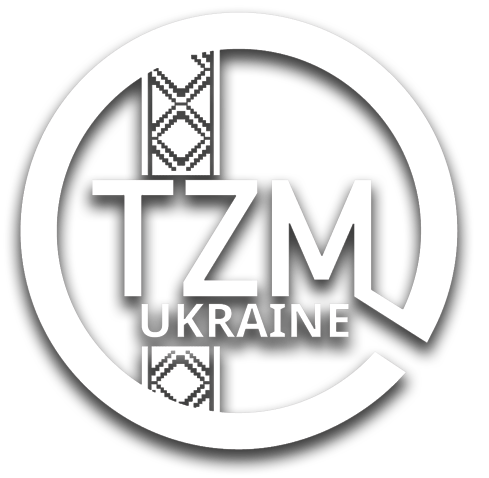
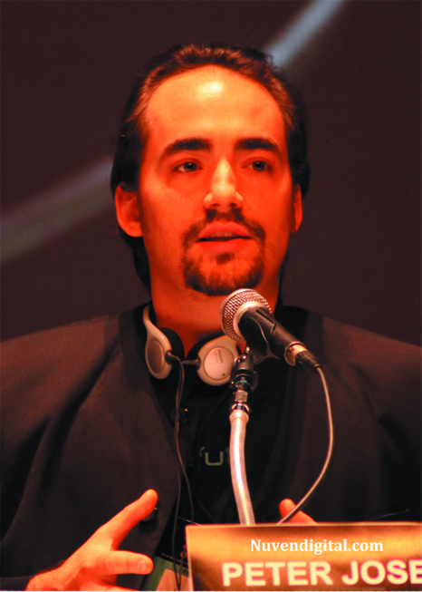

ВПЕРШЕ
В УКРАЇНІ

БІЛЬШЕ ІНФО:
facebook.com/TZMUkraine
vk.com/tzmukraine
tzmukraine.com
ЕВРОПЕЙСЬКА ЗУСТРІЧ
РУХУ ZEITGEIST 2017
ВХІД
ВІЛЬНИЙ
ЗЕЛЕНА БУЧА, КИЇВ
14 - 16
ЛИПНЯ

ПРЯМА ТРАНСЛЯЦІЯ ІЗ
ЗАСНОВНИКОМ РУХУ -
ПІТЕРОМ ДЖОЗЕФОМ
14 ЛИПНЯ
18:00 ПОЧАТОК ПОДІЇ:
Ласкаво просимо на другу європейську зустріч руху ZEITGEIST!
18:30 Олексій Сірий:
Визначення руху "ZEITGEIST"
19:45 ВЕЧЕРЯ
20:45 Стефан Кенген:
Інтроспекція
21:45 Олег Савицький:
Проблема змін клімату - смертельний виклик та найбільша можливість
23:00 ЖИВА МУЗЫКА:
Виступ гурту "BOHO MORI"
15 ЛИПНЯ
09:00 СНІДАНОК
11:30 Кліффорд Шиллінг:
Стійке будівництво
13:00 ОБІД
15:00 Роман Толмачов:
Розумні будинки та Інтернет речей
16:30 ПРОГУЛЯНКА ПРИРОДОЮ ТА ВІДПОЧИНОК
18:00 ГРУПОВА ДИСКУСІЯ
Спільне обговорення руху "ZEITGEIST" та головних питань
19:00 ВЕЧЕРЯ
20:00 Пітер Джозеф:
Рух "ZEITGEIST". Питання та відповіді
22:00 ЖИВА МУЗИКА
Українська народна музика: аматорський колектив "СТЕЖИНА"
16 ЛИПНЯ
09:00 СНІДАНОК
11:30 Тіму Космімакі:
Експертне обговорення науки, стійкості та економіки заснованої на законах природи та ресурсах
13:00 ОБІД
14:00 Олександр Єременко:
Отримання харчового продукту в штучних середовищах - вимога 21 століття
15:15 Сергей Чернишов:
Презентація проекту "ЕНЕБРА"
17:15 ЕКСКУРСІЯ ПО КИЕВУ
20:00 ВЕЧЕРЯ
21:00 ДИСКУСІЙНА КОМІСІЯ:
Виступаючі висловлюють свої думки про захід та відповідають на запитання
22:00 ЖИВА МУЗИКА
Виступ гурту "ПНД (ПІСНІ НАШИХ ДНІВ)"